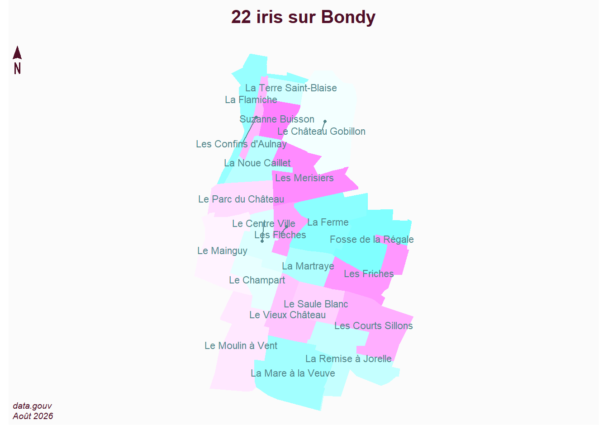
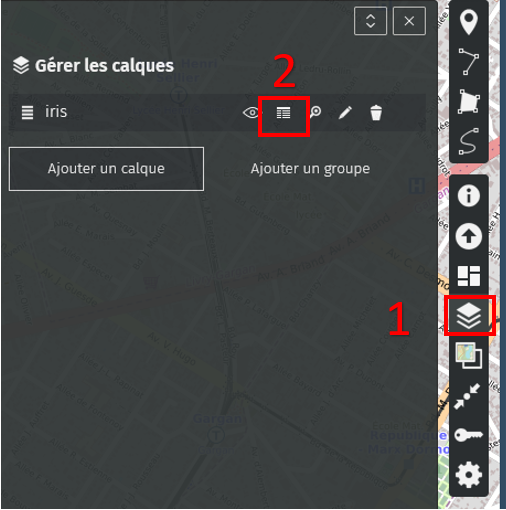

dépend de la qualité du géocodageà la parcelle, mais au point adresse
5 Récupération de sa zone
Code
library(sf)library(mapsf)# lecture de la couche filtrée (issus de m3_prescription_surf)iris <-st_read("data/iris.geojson")
Reading layer `iris' from data source
`C:\Users\bmaranget\coursP8\data\iris.geojson' using driver `GeoJSON'
Simple feature collection with 22 features and 9 fields
Geometry type: POLYGON
Dimension: XY
Bounding box: xmin: 2.469134 ymin: 48.88698 xmax: 2.500152 ymax: 48.92024
Geodetic CRS: WGS 84
Code
# nb d'élémentsnbIris <-length(iris$nom_iris)mf_map(iris, type ="typo", var ="nom_iris", leg_pos =NA, border =NA, pal =cm.colors(22))mf_label(iris, "nom_iris", overlap = F, col ="cadetblue4")mf_layout(paste0(nbIris, " iris sur Bondy"), credits ="data.gouv\nAoût 2026")

Chaque étudiant clique sur une carte umap iris mise en place pour le cours.

puis calque (1) et tableau(2)
Attention à bien visualiser sa zone avec d’ouvrir le tableau !
6 1e saisie
On prépare la carte avant / après donc il faut sauvegarder les données mais pour sa zone uniquement
6.1 Carte avant
Une fois les zones partagés, sous Qgis, chaque étudiant fait une intersection sur sa zone, menu vecteur / géotraitement / intersection.


{kind=link}